L犬夜叉2
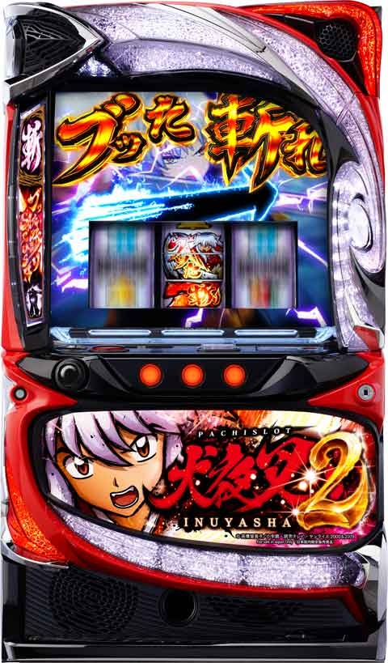
【天井情報】
666G+α CZ当選
CZスルー天井 CZ7回スルー後8回目のCZで AT確定
駆け抜け時は最大３スルー
設定変更時 333G+α CZ当選 、4回目のCZで AT確定 50%以上で2回以内に AT当選
【リセット判別】
不明
【有利区間について】
差枚+2200枚前後でエンディング移行。ボーナスゲットゾーン経由して上位ATへ
狙い目
【リセット狙い】
0スルー 100G
1スルー 200G
2スルー 0G
3スルー 0G
※2スルー以降はATまで
【スルー別CZ間天井狙い】
駆け抜け後以外
0から4スルー 550G
5スルー 400G
6スルー 0G
7スルー 0G
※6スルー以降はATまで
駆け抜け後
0スルー
積極派 0G
慎重派 80G
1スルー 200G
2スルー 0G
3スルー 0G
※2スルー以降はATまで
上位AT後
0スルー 100Gから
1スルー以降は駆け抜け後同様
※駆け抜け後の方が月下ポイント貯まっている可能性を考慮して0スルーは少しボーダー上げてます。
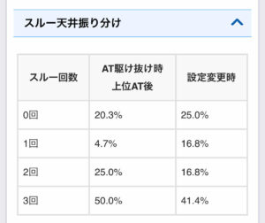
【月下ポイント狙い】
LV6 上位CZ当選まで
LV5 上位CZ当選まで？(LV5は弱い可能性あり)
残りpt示唆大 上位CZ当選まで
蓄積エフェクト大 不明(恐らく単体では打てない)
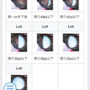
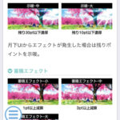
【有利区間切れ狙い】
0スルーかつ差枚+1800枚以上 0Gから333Gゾーンまで。
※エンディング以外有利切れのタイミング不明。
有利切れの履歴
14:48が差枚+2200枚前後でエンディングに行ってると思われる。
14:53の履歴は不明だが14:56はボーナスゲットゾーンの履歴と思われる。(ARTの信号で10-30Gの履歴が上がる。)
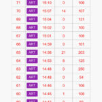
やめ時
基本は即やめ？
駆け抜け後や上位AT後は50Gの札演出で赤札、紫札なら続行。緑札は厳しそう？慎重に行くなら一旦捨てでも良さそう。
その他
【示唆関連について】
・アイキャッチ3D
かごめ 0Gから厳しそう？確認した台は130Gから？
・アイキャッチ2D
全員集合 AT当選まで
鋼牙&かごめ AT当選まで？
・敵のアイキャッチ(CZ失敗後出現)
白童子 CZ当選まで
神楽 ボーダー下げる？
※シルエットのみは扱い不明
・札演出
赤札以上 AT当選まで
緑札 出現後CZ1スルー したらAT当選まで
・敵黒塗りSU
SU白童子 リプレイ、ベル否定でCZ当選まで
SU神楽 ベル否定でボーダー下げる？
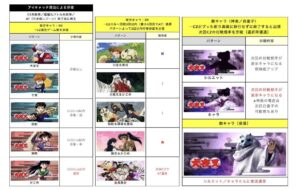
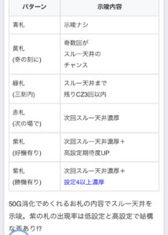
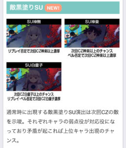
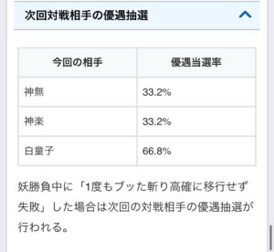
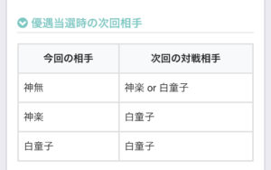
【駆け抜け後0スルー0Gから打つ時の押し引きについて】
AT駆け抜け後は月下ポイントが貯まりやすい。
内部的にMAXまで貯まっているとスイカ成立時に月下へ移行する。
狙い方は定まっていないが以下の様な示唆で押し引きする感じ？80GハマったらそのままCZ間天井狙い？
示唆関連が出にくい可能性もあるためそのままCZまで打ち切った方が良い可能性もあり。
・スイカ1回引くまで打つ。
・50Gの札演出で当該天井に期待できるならCZ当選まで？
・アイキャッチで、かごめ、3回以内濃厚(中)以上が出たならそのままCZ当選まで？
・スイカ1回引いて50Gまで回して何も示唆無いなら一旦やめ？
【AT直撃後の駆け抜け履歴】
13:41の履歴が直撃駆け抜け
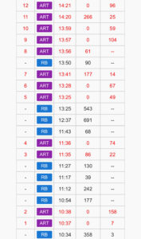
参考元
基本情報
- メーカー: エフ
- 機械割: 97.6% 〜 114.9%
- 導入開始日: 2024年12月02日（月）
- ゲーム性概要: ●初当り時はATに直行！ ●前作でもおなじみのブッた斬りSRUSH搭載 ●AT中はボーナス連打に期待 ●エンディング後はツラヌキ!!


打ち方
打ち方・小役
打ち方（小役狙い）
「最初に狙う絵柄」

左リールに赤7を狙う。
「チェリー停止時」 成立役…弱チェリーor強チェリーorブッた斬りチェリー

中＆右リールはフリー打ちでも取りこぼしはナシ。
「赤7下段停止時」 成立役…ハズレorベルorリプレイorチャンス目A

「スイカ停止時」 成立役…スイカorチャンス目Borブッた斬りスイカ

中リールにブッた斬りを狙う。右リールはこぼしがないのでフリー打ちでOKだ。 ブッた斬りを押した位置によってはスイカを引き込めないが、スイカはリプレイフラグのうえ、停止形で判別できるので問題ない。
「レア役の停止形」

「ブッた斬りチェリー＆スイカの判別」

ブッた斬りを狙わなくても、中リール中段にスイカや上段に青7が止まればブッた斬り役（左リールチェリー停止時はブッた斬りチェリー、スイカ停止時はブッた斬りスイカ）濃厚だ。
「スイカこぼし時の停止形」

中リールにスイカを引き込めない位置で押した場合、右リール上段にスイカ停止でスイカとなるので、中＆右リールフリー打ちでも成立役は判別できる。
変則押しはNG
通常時、押し順ナビなし時は左リール第1停止での消化を推奨する。
解析情報通常時
小役関連
小役確率
| 設定 | 共通ベル | リプレイ | 弱チェリー |
|---|---|---|---|
| 1 | 1/12.8 | 1/12.8 | 1/69.3 |
| 2 | 1/12.8 | 1/12.8 | 1/68.7 |
| 3 | 1/12.8 | 1/12.8 | 1/67.3 |
| 4 | 1/12.8 | 1/12.8 | 1/65.9 |
| 5 | 1/12.8 | 1/12.8 | 1/64.6 |
| 6 | 1/12.8 | 1/12.8 | 1/64.0 |
| 設定 | 強チェリー | スイカ | チャンス目A |
| 1 | 1/819.2 | 1/100.1 | 1/655.4 |
| 2 | 1/762.0 | 1/98.6 | 1/655.4 |
| 3 | 1/728.2 | 1/96.4 | 1/630.2 |
| 4 | 1/682.7 | 1/92.3 | 1/606.8 |
| 5 | 1/655.4 | 1/88.0 | 1/565.0 |
| 6 | 1/630.2 | 1/87.4 | 1/546.1 |
| 設定 | チャンス目B | ブッた斬りチェリー | ブッた斬りスイカ |
| 1 | 1/780.2 | 1/16384.0 | 1/16384.0 |
| 2 | 1/744.7 | 1/16384.0 | 1/16384.0 |
| 3 | 1/728.2 | 1/16384.0 | 1/16384.0 |
| 4 | 1/697.2 | 1/16384.0 | 1/16384.0 |
| 5 | 1/630.2 | 1/16384.0 | 1/16384.0 |
| 6 | 1/618.3 | 1/16384.0 | 1/16384.0 |
ブッた斬り役はどちらもAT直撃＋報酬アップゾーン濃厚だ。
CZ当選率
| 役 | 通常 | 高確 | 超高確 |
|---|---|---|---|
| 弱チェリー | 0.1% | 10.2% | 50.0% |
| スイカ | 0.1% | 10.2% | 50.0% |
| 強チェリー | 40.6% | 66.8% | 100% |
| チャンス目A | 25.0% | 40.6% | 100% |
| チャンス目B | 33.2% | 50.0% | 100% |
CZ本前兆中のレア役では、勝利（CZ成功）抽選がおこなわれる。
内部状態関連
内部状態移行率
通常時の内部状態は通常・高確・超高確の3種類あり、妖勝負の当選率や対戦相手の振り分けが変化。 昇格契機はレア役と（超）高確間のゲーム数ハマリとなっていて、基本的に高確・超高確は20Gで転落するが、消化中はゲーム数の加算抽選があるのでロング継続する場合もある。
設定変更後・内部状態振り分け
| 内部状態 | 振り分け |
|---|---|
| 通常 | 74.6% |
| 高確 | 20.3% |
| 超高確 | 5.1% |
［通常滞在時］内部状態移行率
| 役 | 高確へ | 超高確へ |
|---|---|---|
| 弱チェリー | 37.5% | 6.3% |
| スイカ | 20.7% | 18.8% |
| 強チェリー | 25.0% | 25.0% |
| チャンス目A | 25.0% | 25.0% |
| チャンス目B | 25.0% | 25.0% |
［高確滞在時］内部状態移行率
| 役 | 高確へ | 超高確へ |
|---|---|---|
| 弱チェリー | ー | 21.9% |
| スイカ | ー | 50.0% |
| 強チェリー | ー | 100% |
| チャンス目A | ー | 100% |
| チャンス目B | ー | 100% |
（超）高確中・ゲーム数加算当選率
| ゲーム数 | その他 | 弱チェリー | スイカ |
|---|---|---|---|
| ＋3G | 0.4% | 75.0% | 75.0% |
| ＋5G | ー | 12.5% | 25.0% |
| ＋7G | ー | 6.3% | ー |
| ＋10G | ー | 6.3% | ー |
| ゲーム数 | 強チェリー | チャンス目A | チャンス目B |
| ＋3G | 25.0% | 54.7% | 34.4% |
| ＋5G | 25.0% | 25.0% | 25.0% |
| ＋7G | 25.0% | 10.2% | 20.3% |
| ＋10G | 25.0% | 10.2% | 20.3% |
［ゲーム数契機］高確以上当選時の移行先振り分け
| 内部状態 | 振り分け |
|---|---|
| 高確 | 75.0% |
| 超高確 | 25.0% |
小役契機と同様に、ゲーム数ハマリで（超）高確へ移行した場合もゲーム数は20G。小役でのゲーム数加算抽選もおこなわれる。
月下ステージ時関連（月下ポイント含む）
月下ポイント抽選
設定変更時・月下ステージ移行時に月下ポイントの初期値を決定（最大50pt）。高確・CZ・AT終了後に内部的にポイントを減算していき、0ptの状態でスイカを引くと月下ステージへ移行する。 低確率ではあるが、スイカ成立時は月下ポイント不問で月下ステージへ移行することもある。
［（超）高確終了時］月下ポイント減算当選率
| 減算 | 高確終了時 | 超高確終了時 |
|---|---|---|
| 1pt | 15.6% | 45.3% |
| 3pt | 0.4% | 1.6% |
| 5pt | 0.4% | 1.6% |
| 10pt | 0.4% | 1.6% |
| トータル | 16.8% | 50.0% |
［CZ終了時］月下ポイント減算当選率
| 減算 | 神無 | 神楽 | 白童子 |
|---|---|---|---|
| 1pt | 94.9% | 89.8% | 21.9% |
| 3pt | 3.1% | 6.3% | 40.6% |
| 5pt | 1.6% | 3.1% | 25.0% |
| 10pt | 0.4% | 0.8% | 12.5% |
| トータル | 100% | 100% | 100% |
［AT終了時］月下ポイント減算当選率
| 減算 | 駆け抜け時以外 | 駆け抜け時 |
|---|---|---|
| 1pt | 84.4% | ー |
| 3pt | 12.5% | ー |
| 5pt | 1.6% | 50.0% |
| 10pt | 1.6% | 50.0% |
| トータル | 100% | 100% |
［引き戻しゾーン終了時］月下ポイント減算当選率
| 減算 | 当選率 |
|---|---|
| 1pt | ー |
| 3pt | 85.9% |
| 5pt | 12.5% |
| 10pt | 1.6% |
| トータル | 100% |
［スイカ成立時］月下ステージ移行率
| 内部状態 | 移行率 |
|---|---|
| 通常 | 0.1% |
| 高確 | 1.6% |
| 超高確 | 7.8% |
月下ポイントが0になっていなくても、スイカ成立時は内部状態を参照して月下ステージ移行が抽選される。
魍魎丸バトル当選率
| 役 | 当選率 |
|---|---|
| ハズレ | ー |
| リプレイ | 3.1% |
| 共通ベル | 3.1% |
| 弱レア役 | 50.0% |
| 強レア役 | 100% |
バトル当選時は3Gの前兆を経由するが、前兆中もバトル中と同様の数値で勝利抽選がおこなわれる。
妖勝負（CZ）
妖勝負概要

10G＋αのチャンスゾーン。対戦相手に応じた弱点役やレア役を引いてブッた斬り高確へ移行させ、ブッた斬り高確中にブッた斬り（成立役に応じた抽選）が発生すればAT当選となる。 ブッた斬り高確中はゲーム数減算がストップし、一定回数の押し順ナビが発生すると終了。 最終ゲームのラストジャッジでは、成立役に応じたAT抽選がおこなわれる。
妖勝負性能
| 項目 | 内容 |
|---|---|
| 突入契機 | レア役での抽選、規定ゲーム数消化 |
| 継続ゲーム数 | 10G＋α |
| 消化中の抽選 | 成立役に応じたブッた斬り高確抽選をおこない、 ブッた斬り高確中にブッた斬り発生でAT濃厚 |
| AT期待度 | 平均40% |
妖勝負確率
| 設定 | 確率 |
|---|---|
| 1 | 1/249 |
| 2 | 1/244 |
| 3 | 1/240 |
| 4 | 1/234 |
| 5 | 1/217 |
| 6 | 1/210 |
対戦相手ごとの弱点役・勝利期待度
| 対戦相手 | 弱点役 | 勝利期待度 |
|---|---|---|
| 神無 | リプレイ | 約30% |
| 神楽 | ベル | 約36% |
| 白童子 | リプレイ・ベル | 約70% |
※レア役は全員の弱点役
ブッた斬り高確移行率
| 役 | 神無 | 神楽 | 白童子 |
|---|---|---|---|
| 共通ベル | 25.0% | 100% | 79.7% |
| リプレイ | 100% | 33.2% | 79.7% |
| 弱レア役 | 100% | 100% | 100% |
| 強レア役 | 100% | 100% | 100% |
ブッた斬り高確中・ブッた斬り当選率
| 役 | 神無 | 神楽 | 白童子 |
|---|---|---|---|
| 共通ベル | ー | ー | 12.5% |
| リプレイ | ー | ー | 12.5% |
| 同色ベル2連 | 33.2% | 40.6% | 66.8% |
| 弱レア役 | 46.9% | 46.9% | 66.8% |
| 強レア役 | 100% | 100% | 100% |
| 斬レア役 | 100% | 100% | 100% |
※斬レア役…ブッた斬りチェリーorブッた斬りスイカ
ブッた斬り高確のナビ回数振り分け 神無
| ナビ回数 | リプレイ | 共通ベル | 弱レア役 | 強レア役 |
|---|---|---|---|---|
| 1回 | 89.5% | — | 78.1% | 65.2% |
| 2回 | 10.2% | — | 20.3% | 33.2% |
| 3回 | 0.4% | — | 1.6% | 1.6% |
神楽
| ナビ回数 | リプレイ | 共通ベル | 弱レア役 | 強レア役 |
|---|---|---|---|---|
| 1回 | — | 79.3% | 71.9% | 62.1% |
| 2回 | — | 20.3% | 25.0% | 33.2% |
| 3回 | — | 0.4% | 3.1% | 4.7% |
白童子
| ナビ回数 | リプレイ | 共通ベル | 弱レア役 | 強レア役 |
|---|---|---|---|---|
| 1回 | 66.4% | 66.4% | 60.5% | 50.0% |
| 2回 | 33.2% | 33.2% | 33.2% | 37.5% |
| 3回 | 0.4% | 0.4% | 6.3% | 12.5% |
当選契機別・妖勝負の対戦相手振り分け 通常滞在時
| 役 | 神無 | 神楽 | 白童子 |
|---|---|---|---|
| 弱チェリー | 69.9% | 25.0% | 5.1% |
| スイカ | 62.5% | 25.0% | 12.5% |
| 強チェリー | 16.8% | 50.0% | 33.2% |
| チャンス目A | 43.8% | 50.0% | 6.3% |
| チャンス目B | 46.1% | 43.8% | 10.2% |
高確滞在時
| 役 | 神無 | 神楽 | 白童子 |
|---|---|---|---|
| 弱チェリー | 61.7% | 33.2% | 5.1% |
| スイカ | 54.3% | 33.2% | 12.5% |
| 強チェリー | 16.8% | 50.0% | 33.2% |
| チャンス目A | 37.5% | 50.0% | 12.5% |
| チャンス目B | 35.9% | 43.8% | 20.3% |
超高確滞在時
| 役 | 神無 | 神楽 | 白童子 |
|---|---|---|---|
| 弱チェリー | 37.5% | 50.0% | 12.5% |
| スイカ | 37.5% | 50.0% | 12.5% |
| 強チェリー | 12.5% | 37.5% | 50.0% |
| チャンス目A | 25.0% | 50.0% | 25.0% |
| チャンス目B | 16.8% | 50.0% | 33.2% |
ラストジャッジの勝利当選率

残りゲーム数が0になると発生するラストジャッジ中は、レア役や弱点役を引けば勝利のチャンスとなる。
ラストジャッジの勝利当選率
| 役 | 神無 | 神楽 | 白童子 |
|---|---|---|---|
| 下記以外 | ー | ー | 25.0% |
| リプレイ | 25.0% | ー | 33.2% |
| 共通ベル | ー | 25.0% | 33.2% |
| 弱レア役 | 50.0% | 50.0% | 100% |
| 強レア役 | 100% | 100% | 100% |
| 斬レア役 | 100% | 100% | 100% |
※斬レア役…ブッた斬りチェリーorブッた斬りスイカ
次回対戦相手の優遇抽選
妖勝負中に一度もブッた斬り高確へ移行せず敗北した場合、次回の妖勝負での対戦相手の優遇抽選がおこなわれる。
ブッた斬り高確移行ナシ時・次回対戦相手優遇抽選当選率
| 今回の対戦相手 | 当選率 |
|---|---|
| 神無 | 33.2% |
| 神楽 | 33.2% |
| 白童子 | 66.8% |
優遇抽選当選時の対戦相手
| 今回の対戦相手 | 次回の対戦相手 |
|---|---|
| 神無 | 神楽or白童子 |
| 神楽 | 白童子 |
| 白童子 | 白童子 |
報酬アップゾーン当選率

妖勝負勝利時は、それまでのスルー回数を参照して、報酬アップゾーンの当否を抽選。AT間、3・5・7・8回目での妖勝負勝利時は、報酬アップゾーンのチャンスだ。 スルー回数天井到達でCZがAT直撃になった場合も、報酬アップゾーン抽選はおこなわれる。
CZ成功時・報酬アップゾーン当選率
| CZ | 当選率 |
|---|---|
| 1回目 | 0.4% |
| 2回目 | 0.4% |
| 3回目 | 3.1% |
| 4回目 | 0.4% |
| 5回目 | 12.5% |
| 6回目 | 0.4% |
| 7回目 | 12.5% |
| 8回目 | 40.6% |
［報酬アップゾーンの告知］


AT告知画面にノイズが走ると報酬アップゾーン！
CZ当選までの平均ゲーム数
CZの規定ゲーム数は最大666Gだが、高設定ほど早いゲーム数で当たりやすい傾向にある。CZの回数によっても異なり、4回目は比較的早いゲーム数が天井になりやすい。
［ゲーム数契機］CZ当選までの平均ゲーム数
※設定変更時・AT駆け抜け時を除く
［ゲーム数契機］333G以内にCZに当選する割合
※設定変更時・AT駆け抜け時を除く
魍魎丸バトル
魍魎丸バトル概要

月下ステージ中の抽選で突入するCZ。全役で魍魎丸バトルを抽選し、バトル勝利で報酬アップゾーンを経由してATへ突入する。
魍魎丸バトル性能
| 項目 | 内容 |
|---|---|
| 突入契機 | 月下ステージ中の抽選 |
| 消化中の抽選 | 全役で勝利抽選 |
| 勝利期待度 | 約51% |
| 勝利時の恩恵 | 報酬アップゾーン |
魍魎丸バトル勝利当選率
| 役 | 当選率 |
|---|---|
| ハズレ | 3.1% |
| 共通ベル | 30.1% |
| リプレイ | 30.1% |
| 弱レア役 | 50.0% |
| 強レア役 | 100% |
| 斬レア役 | 100% |
※斬レア役…ブッた斬りチェリーorブッた斬りスイカ
報酬アップゾーン
報酬アップゾーン概要


AT中の報酬（ボーナスの初期個数）をアップさせられるゾーン。最大8個からATを始められるケースもある。
報酬アップゾーン性能
| 項目 | 内容 |
|---|---|
| 突入契機 | 魍魎丸バトル勝利時、通常時の斬レア役成立時 |
| 平均獲得ボーナス数 | 2.49個（2～8個） |
| 期待獲得枚数 | 約1090枚 |
※斬レア役…ブッた斬りチェリーorブッた斬りスイカ
奈落チャレンジ
奈落チャレンジ概要

5G以内にブッた斬りが発生すれば奈落決戦（上位）AT直行へ直行する。
奈落チャレンジ性能
| 項目 | 内容 |
|---|---|
| 突入契機 | CZ スルー回数天井の一部、 ブーストチャンスの規定ゲーム数到達 |
| 継続ゲーム数 | 5G |
| 消化中の抽選 | 全役で奈落決戦を抽選 |
奈落決戦当選率
| 役 | 当選率 |
|---|---|
| 同色ベル2連 | 40.6% |
| 弱チェリー | 66.8% |
| スイカ | 66.8% |
| 強チェリー | 100% |
| チャンス目A | 100% |
| チャンス目B | 100% |
| 斬レア役 | 100% |
※斬レア役…ブッた斬りチェリーorブッた斬りスイカ
前兆
妖勝負本前兆中の勝利書き換え当選率
| 役 | 神無 | 神楽 | 白童子 |
|---|---|---|---|
| 弱レア役 | 3.1% | 5.1% | 10.2% |
| 強レア役 | 10.2% | 10.2% | 25.0% |
解析情報ボーナス時
ブッた斬りスラッシュ（AT）
ブッた斬りスラッシュ概要

ブッた斬り成功のたびにボーナス個数が1個ずつ増えていく、前作でもおなじみのゲーム性。同色ベル2連やレア役成立でブッた斬りのチャンスとなる。
ブッた斬りスラッシュ性能
| 項目 | 内容 |
|---|---|
| おもな突入契機 | CZ成功 |
| 継続ゲーム数 | 20G（フリーズ後は99G）＋α |
| ボーナス率 | BIG：ブーストチャンス＝約55：約45 |
「告知タイプ」

AT開始時やボーナス終了時に、犬夜叉と殺生丸の2種類から告知タイプを選択可能。犬夜叉はチャンス告知、殺生丸は完全告知となる。
ボーナス当選率
| 役 | 当選率 |
|---|---|
| 同色ベル2連 | 40.6% |
| 弱チェリー | 50.0% |
| スイカ | 50.0% |
| 強チェリー | 100% |
| チャンス目A | 59.4% |
| チャンス目B | 75.0% |
| 斬レア役 | 100% |
※斬レア役…ブッた斬りチェリーorブッた斬りスイカ
同色ベルが2連する確率は、約1/5.12。リプレイや共通ベルでもボーナス当選の可能性はある。
リプレイ・共通ベルでのボーナス当選率
| 役 | 1回目のAT | 2回目以降のAT |
|---|---|---|
| リプレイ | 4.70% | 0.80% |
| 共通ベル | 4.70% | 0.80% |
| 1回目の押し順ベル | 1.53% | 0.40% |
前作とは異なり、本機はリプレイ・共通ベル・1回目の押し順ベルでもボーナス抽選がおこなわれていて、ブッた斬りスラッシュ1回目（初当り時）は当選率が優遇されている。
AT当選ゲームごとの獲得枚数表示
| ゲーム数 | 表示 |
|---|---|
| 100G以内 | 前回ATの獲得枚数を引き継いで表示 |
| 101G以降 | 見た目上0枚からスタートするが、内部的には引き継ぐ |
獲得枚数のカウントは通常時にも引き継がれていて、早いゲーム数で引き戻した場合などは一撃で1000枚を獲得しなくてもブッた斬りゾーンの権利を獲得できるケースがある。 差枚数のカウントとは別軸となるため、差枚がマイナスだからブッた斬りゾーンに突入しないというわけではない。
ボーナス
ボーナス概要

BIG2種類（青7BIG or 犬夜叉BIG）とブーストチャンスの計3種類のボーナスが存在。 消化中は成立役に応じて枚数上乗せ抽選がおこなわれる。
また、BIG中は追加で内部的にポイントを獲得していき、一定数に達すると封印（ATゲーム数ロック）を獲得。封印中はATゲーム数の上乗せが抽選される。奈落決戦中のボーナスはATゲーム数上乗せの代わりに、味方参戦抽選がおこなわれる。
ボーナス性能
| 項目 | 青7BIG | 犬夜叉BIG | ブーストチャンス |
|---|---|---|---|
| 獲得枚数 | 200枚＋α | 100枚＋α | 50枚＋α |
| 消化中の抽選 | ● 枚数上乗せ抽選 ● BIG中は規定のポイント到達でATゲーム数を封印、封印後はATゲーム数上乗せ抽選 ● 奈落決戦中のBIGは味方参戦抽選 |
引き戻しゾーン
引き戻しゾーン概要
1回のATで1000枚以上獲得した場合に突入の権利を獲得する引き戻しゾーン（奈落決戦移行時を除く）。10G間、全役で引き戻しを抽選していて、強レア役以上成立時は引き戻し濃厚だ。 デフォルトのブッた斬りゾーンに加え、ボーナス個数を引き継ぐブブブブッた斬りゾーン、成功で奈落決戦へ突入する奈落覚醒ゾーンの3種類が存在する。
引き戻しゾーン性能
| 項目 | 内容 |
|---|---|
| 突入契機 | 1000枚以上獲得後のAT終了時 |
| 継続ゲーム数 | 10G |
| 消化中の抽選 | 全役で引き戻しを抽選 |
| 引き戻し期待度 | 約50% |
ゾーン種別ごとの成功時の恩恵
| ゾーン | 恩恵 |
|---|---|
| ブッた斬りゾーン | ATへ突入 |
| ブブブブッた斬りゾーン | 前回のボーナス個数を引き継いでATへ突入 |
| 奈落覚醒ゾーン | 奈落決戦へ突入 |
［ブッた斬りゾーン］

［ブブブブッた斬りゾーン］

［奈落覚醒ゾーン］

引き戻しゾーンの種別振り分け
ブブブブッた斬りゾーンは高設定ほど選択されやすい。
ブッた斬りゾーン中の引き戻し当選率
| 役 | 当選率 |
|---|---|
| 下記以外 | 3.1% |
| リプレイ | 12.5% |
| 共通ベル | 12.5% |
| 弱レア役 | 59.4% |
| 強レア役 | 100% |
| 斬レア役 | 100% |
※斬レア役…ブッた斬りチェリーorブッた斬りスイカ
リプレイや共通ベルでも引き戻しに期待できる。
奈落決戦（上位AT）
奈落決戦概要

ボーナスゲットゾーンとのループで出玉を増やす上位AT。同色ベルチャレンジの回数管理型で、2回の保証終了で転落のピンチとなる。味方が参戦すれば回数減算がストップする。
奈落決戦性能
| 項目 | 内容 |
|---|---|
| 突入契機 | 奈落チャレンジ成功時、奈落覚醒ゾーン成功時、 ボーナスゲットゾーン後 |
| 継続ゲーム数 | 最低2回の同色ベルチャレンジ失敗まで |
| 消化中の抽選 | ボーナスストックゾーン、味方参戦 |
| ループ期待度 | 約82% |
ボーナスゲットゾーン当選率
| 役 | 当選率 |
|---|---|
| 同色ベル2連 | 100% |
| 共通ベル | 1.0% |
| リプレイ | 1.0% |
| 弱チェリー | 100% |
| スイカ | 100% |
| 強チェリー | 100% |
| チャンス目A | 100% |
| チャンス目B | 100% |
| 斬レア役 | 100% |
※斬レア役…ブッた斬りチェリーorブッた斬りスイカ
ボーナスゲットゾーン
ボーナスゲットゾーン概要

奈落決戦成功で移行するST型のボーナスストックゾーンで、5G以内にストック獲得で5Gが再セット。獲得したボーナスをすべて消化後は、奈落決戦へ再突入する。
ボーナスゲットゾーン性能
| 項目 | 内容 |
|---|---|
| 突入契機 | ブッた斬りボーナス終了後、奈落決戦成功後 |
| 継続ゲーム数 | 5GのST型 |
| 消化中の抽選 | 全役でストック獲得抽選 |
| ストック確率 | 1/4.6 |
| ストック数 | 最大8個 |
ボーナスストック当選率
| 役 | 当選率 |
|---|---|
| ハズレ | 10.2% |
| 共通ベル | 100% |
| リプレイ | 100% |
| 弱チェリー | 100% |
| スイカ | 100% |
| 強チェリー | 100% |
| チャンス目A | 100% |
| チャンス目B | 100% |
| 斬レア役 | 100% |
※斬レア役…ブッた斬りチェリーorブッた斬りスイカ
斬レア役はMAXのボーナス8個を獲得！
ボーナスストック当選時のボーナス個数振り分け
| 個数 | その他 | リプレイ | 共通ベル |
|---|---|---|---|
| 1個 | 99.6% | 98.4% | 98.4% |
| 2個 | 0.4% | 1.6% | 1.6% |
| 3個 | ー | ー | ー |
| 4個 | ー | ー | ー |
| 6個 | ー | ー | ー |
| 8個 | ー | 0.05% | 0.05% |
| 個数 | 弱レア役 | 強レア役 | 斬レア役 |
| 1個 | 79.7% | ー | ー |
| 2個 | 18.4% | 66.8% | ー |
| 3個 | ー | 23.0% | ー |
| 4個 | 1.6% | ー | ー |
| 6個 | ー | 5.1% | ー |
| 8個 | 0.4% | 5.1% | 100% |
※斬レア役…ブッた斬りチェリーorブッた斬りスイカ
レア役契機の場合、複数ストックに期待できる。
ツラヌキ・有利区間
ツラヌキ条件と恩恵
| 項目 | 内容 |
|---|---|
| 条件 | ブッた斬りボーナス（エンディング）到達 |
| 恩恵 | ボーナスゲットゾーンへ突入 ボーナスゲットゾーンはコチラ |
有利区間のリセット条件
| No. | 条件 |
|---|---|
| 1 | 差枚2400枚到達時 |
| 2 | ボーナスゲットゾーン突入時の一部 |
ボーナスゲットゾーン必ずしも有利区間リセット経由で突入するわけではない。奈落決戦終了後、次のAT初当り時にいきなりブッた斬りゾーンの権利を獲得していることもある。
ボーナス
ボーナス中の抽選
ボーナス中は成立役を参照して枚数上乗せと内部ポイントの獲得を抽選。ポイントが50ptに到達すると、封印（ATゲーム数減算ストップ）を獲得。封印中に引いたボーナスでは、消化中にATのゲーム数上乗せが抽選される。 奈落決戦中はATゲーム数上乗せの代わりに、味方参戦（ナビの減算ストップ）を獲得する。
小役別の獲得内部ポイント
| 役 | ポイント |
|---|---|
| 下記以外 | 抽選アリ |
| 共通ベル | 3pt以上 |
| レア役 | 10pt以上 |
［桔梗のポイント示唆］


液晶右側の桔梗で獲得ポイントを示唆。チャージ中の下に表示された四角形がすべて貯まると封印が確定する。
［キャラでの上乗せ示唆］

封印中に引いたボーナス中はキャラが昇格するほど大量上乗せに期待できる
［奈落決戦中］

奈落決戦中は液晶右側にポイントが表示されていて、MAXになると味方が参戦。以降はMAXにするごとに参戦する味方が昇格していく。
演出情報
通常時
ステージ解説
| ステージ | 示唆 |
|---|---|
| 昼 | デフォルト |
| 夕方 | 高確示唆 |
| 夜 | 高確以上!? |
| 月下 | 魍魎丸バトル当選の特殊高確 |
［昼］

［夕方］

［夜］

［月下］

魍魎丸バトルの特殊高確ステージ。滞在ゲーム数は20Gで、バトルに敗北してもゲーム数が残っていれば復帰する。20G消化後は必ず魍魎丸バトルに発展する。
お札演出

CZ終了後などに、液晶右側にお札が出現。お札は50G消化後にめくられて、書いてある文字（色）でCZの規定回数や設定を示唆する。
お札の出現タイミング
| No. | タイミング |
|---|---|
| 1 | CZ失敗時 |
| 2 | 月下ステージ終了時 |
| 3 | AT・引き戻しゾーン終了時 |
お札演出・示唆内容
| パターン | 示唆 |
|---|---|
| 黄文字 | CZスルー回数天井が奇数回数を示唆 |
| 緑文字 | 残りCZ2回以内示唆 |
| 赤文字 | 次回AT当選濃厚 |
| 紫文字（好機有り） | 次回スルー天井濃厚かつ、高設定示唆 |
| 紫文字（勝機有り） | 次回スルー天井濃厚かつ、設定4以上濃厚 |
アイキャッチ
通常時のアイキャッチの種類で、次回CZの規定ゲーム数や出現する敵・月下ポイントの蓄積量を示唆する。
アイキャッチ出現タイミング
| No. | タイミング |
|---|---|
| 1 | CZ失敗時 |
| 2 | 魍魎丸バトル敗北時 |
| 3 | AT・引き戻しゾーン終了時 |
No.1のCZ失敗後、ナビ高確へ移行しなかった場合は敵のアイキャッチが出現。 敵のアイキャッチはシルエットのみなら次回CZの対戦相手示唆、キャラが表示されていた場合はそのキャラ以上の敵が登場する。
2Dキャラパターンの示唆
| パターン | 内容 |
|---|---|
| 七宝＆雲母 | CZスルー回数天井2回以内示唆（弱） |
| 犬夜叉＆かごめ | CZスルー回数天井2回以内示唆（中） |
| 弥勒＆珊瑚＆雲母 | CZスルー回数天井2回以内示唆（強） |
| かごめ＆鋼牙 | CZスルー回数天井1回以内濃厚!? |
| 全員集合 | 次回天井濃厚 |
2Dキャラパターンは全てCZスルー回数天井3回以内濃厚。
3Dキャラパターンの序列
| パターン | 序列 |
|---|---|
| 犬夜叉 | デフォルト |
| 七宝 | デフォルト |
| 弥勒 | CZ規定ゲーム数333G＋α以内示唆 弱 |
| 珊瑚 | CZ規定ゲーム数333G＋α以内示唆 中 |
| かごめ | CZ規定ゲーム数333G＋α以内濃厚 |
敵キャラパターンの序列
| パターン | 序列 |
|---|---|
| 対戦キャラシルエット | 次回CZの対戦相手示唆 |
| 対戦キャラ | 次回CZで表示キャラ以上が登場 |
| 傀儡奈落シルエット | 復活勝利濃厚 |
| 傀儡奈落 | 復活勝利濃厚 |
［七宝＆雲母（2D）］

［犬夜叉＆かごめ（2D）］

［弥勒＆珊瑚＆雲母（2D）］

［かごめ＆鋼牙（2D）］

［全員集合（2D）］

［七宝（3D） ］

［敵アイキャッチ：シルエットのみ］

［敵アイキャッチ］

月下ポイント示唆
さまざまなタイミングで獲得する月下ポイントがMAXになると、月下ステージへ移行。液晶右上に出現するの月ランプのパターンで蓄積量を示唆している。
月下ポイント獲得タイミング
| No. | タイミング |
|---|---|
| 1 | （超）高確終了時 |
| 2 | CZ終了時 |
| 3 | AT・引き戻しゾーン終了時 |
月下ポイント獲得エフェクト
| パターン | 獲得量 |
|---|---|
| 小 | 1pt以上 |
| 中 | 3pt以上 |
| 大 | 5pt以上 |
月ランプ発光パターン・示唆内容
| パターン | 示唆 |
|---|---|
| 示唆：微 | 示唆ナシ |
| 示唆：小 | 残り30pt以下に期待 |
| 示唆：中 | 残り30pt以下 |
| 示唆：大 | 残り10pt以下 |
月の満ち欠けレベル別・示唆内容
| レベル | 示唆 |
|---|---|
| レベル0（新月） | 朝イチor月下ステージ終了後 |
| レベル1 | 1pt以上 |
| レベル2 | 10pt以上 |
| レベル3（半月） | 15pt以上 |
| レベル4 | 20pt以上 |
| レベル5 | 30pt以上 |
| レベル6（満月） | 月下ステージ移行 |
基本的に、月が満ちるほど多くポイントを持っている（月下ステージ移行が近い）ことを示唆する。
［月の満ち欠けレベル］

ボーナス
ブーストチャンス終了画面の奈落チャレンジ示唆

ブーストチャンス終了画面でPUSHボタンを押すと、砂嵐のようなエフェクトが発生。エフェクトの色で奈落チャレンジ突入期待度を示唆している。
エフェクト色別・奈落チャレンジ期待度
| 色 | 期待度 |
|---|---|
| 白 | 低 |
| 青 | ↓ |
| 緑 | ↓ |
| 赤 | ↓ |
| 紫 | 高 |
その他
搭載楽曲一覧
| 楽曲 | アーティスト |
|---|---|
| 深い森 | Do As Infinity |
| Every Heart ミンナノキモチ | BoA |
| ANGELUS | 島谷ひとみ |
| 荒ぶる刃 | オリジナル |
| 焰 | オリジナル |
| 輪廻 | オリジナル |
| 運命 | オリジナル |
| Dearest | 浜崎あゆみ |
| 君がいない未来 | Do As Infinity |
| I am | hitomi |
| Grip! | Every Little Thing |
| 出会えた奇跡 | オリジナル |
| Half Blood | オリジナル |
| 虚空の彼方へ | オリジナル |
| ブッTAGIRE！ | オリジナル |
| 愛のサイン無限ループ | オリジナル |
※黄色字は今作からの追加楽曲